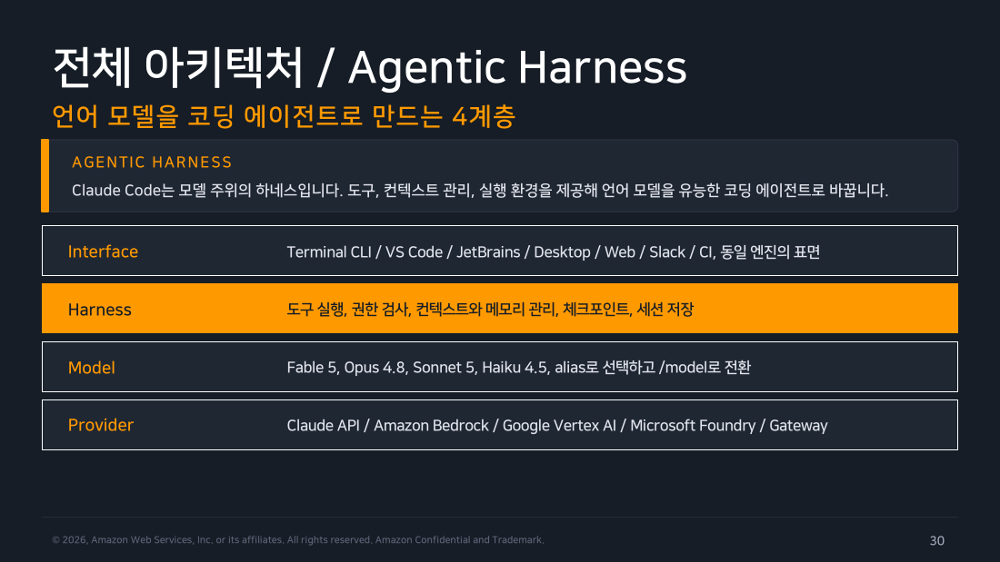
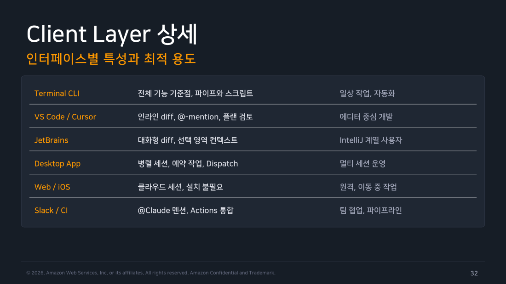
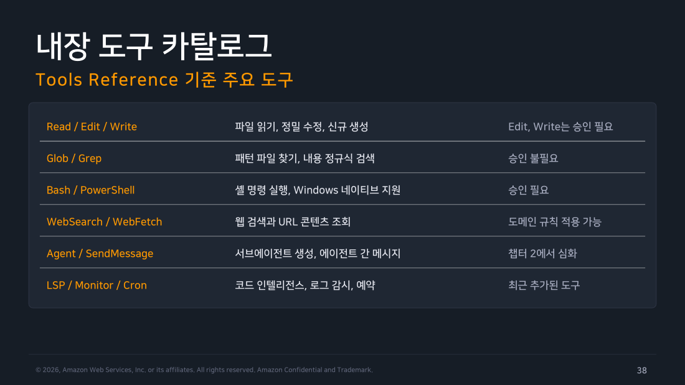
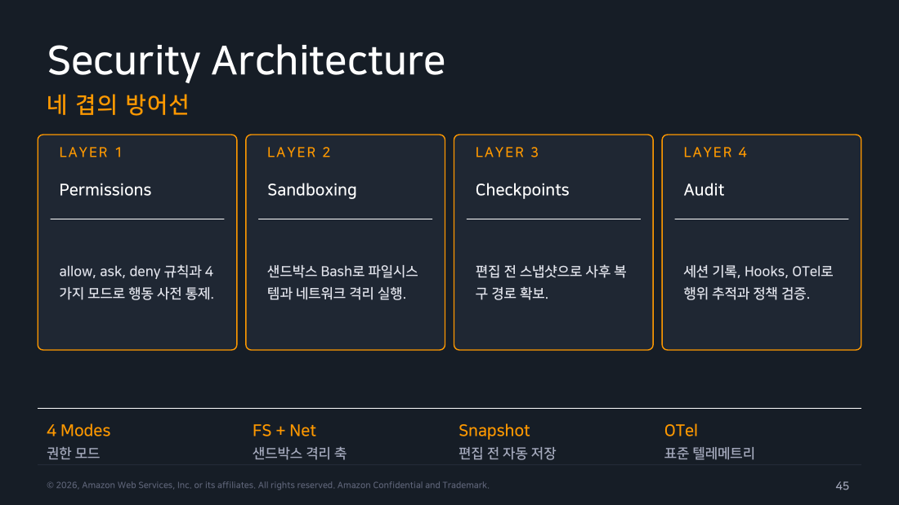

Part 2 — 아키텍처¶
한 줄 요약¶
Claude Code는 모델을 감싼 하네스(Harness) 입니다. 도구, 컨텍스트 관리, 실행 환경을 제공해서 그냥 텍스트를 만들던 언어 모델을 유능한 코딩 에이전트로 바꿉니다.
왜 알아야 하나¶
Part 1에서 "Agentic Loop가 돈다"고 했는데, 정작 그 루프를 누가 돌리는지는 설명하지 않았습니다.
여기서 많은 사람이 오해합니다. 모델(Claude)이 알아서 다 하는 것 같지만, 사실 모델은 텍스트를 생성할 뿐입니다. "이 파일을 읽어야겠다"는 판단은 모델이 하지만, 실제로 디스크에서 파일을 읽어 오는 건 모델이 아닙니다. 그 일을 하는 게 하네스입니다.
이 구분을 알면 그동안 이상하게 보였던 것들이 전부 설명됩니다.
- 왜 권한 승인 팝업이 뜨는가 → 하네스가 도구 실행 전에 권한을 검사하기 때문
- 왜 대화가 길어지면 요약되는가 → 하네스가 컨텍스트 윈도우를 관리하기 때문
- Bedrock으로 바꾸면 뭐가 달라지는가 → 하네스는 그대로고 Provider 계층만 바뀜
1. 4계층 구조¶
하네스(Harness) 란 원래 말에 씌우는 마구(馬具)를 뜻합니다. 말의 힘 자체를 바꾸는 게 아니라, 그 힘을 실제 일에 쓸 수 있게 연결해주는 장치라는 비유입니다.
전체 구조는 네 겹입니다.
flowchart TD
subgraph L1 ["① Interface — 내가 조작하는 표면"]
I["Terminal CLI · VS Code · JetBrains<br/>Desktop · Web · Slack · CI"]
end
subgraph L2 ["② Harness — Claude Code의 본체"]
H["도구 실행 · 권한 검사 · 컨텍스트/메모리 관리<br/>체크포인트 · 세션 저장"]
end
subgraph L3 ["③ Model — 판단하는 두뇌"]
M["Fable 5 · Opus 4.8 · Sonnet 5 · Haiku 4.5<br/>alias로 선택, /model로 전환"]
end
subgraph L4 ["④ Provider — 데이터 경계를 결정"]
P["Claude API · Amazon Bedrock · Google Vertex AI<br/>Microsoft Foundry · LLM Gateway"]
end
I --> H --> M --> P
style I fill:#e3f2fd,stroke:#1976d2,color:#000
style H fill:#673ab7,stroke:#4527a0,stroke-width:3px,color:#fff
style M fill:#e8f5e9,stroke:#388e3c,color:#000
style P fill:#fff3e0,stroke:#f57c00,color:#000읽는 법은 위에서 아래로입니다. 내가 VS Code(Interface)에 프롬프트를 치면, 하네스가 도구 실행 결과와 컨텍스트를 모아 요청을 구성하고, 선택된 모델을 거쳐, 설정된 공급자에게 전달됩니다.
각 계층을 조금씩 풀어보겠습니다.
Interface는 내가 손대는 표면입니다. 터미널이든 에디터든 Slack이든, 결국 프롬프트를 넣고 결과를 보는 창구입니다.
Harness가 Claude Code의 실체입니다. 도구를 실제로 실행하고, 실행 전에 권한을 검사하고, 컨텍스트와 메모리를 관리하고, 편집 전 스냅샷을 남기고, 세션을 저장합니다. 이 파트에서 다루는 내용의 대부분이 여기에 속합니다.
Model은 판단을 담당합니다. 무엇을 읽을지, 어떻게 고칠지, 다 됐는지를 결정합니다.
Provider는 추론 요청이 실제로 어디로 가느냐입니다. 그리고 이 선택이 곧 데이터가 어느 경계 안에 머무는가를 결정합니다. 보안 심사에서 가장 중요한 계층입니다.
여기서 얻는 가장 중요한 시사점은 이것입니다. Interface를 바꿔도 하네스와 설정은 그대로입니다. 터미널에서 만든 CLAUDE.md가 VS Code에서도, 데스크톱 앱에서도 똑같이 적용됩니다.

▲ 교재 슬라이드 30 — Agentic Harness 4계층 구조

▲ 교재 슬라이드 32 — Client Layer 상세 — 인터페이스별 특성
2. 코드가 실제로 어디서 도는가¶
앞의 Interface가 "내가 어디서 조작하는가"였다면, 이번엔 "코드가 실제로 어느 컴퓨터에서 실행되는가" 입니다. 이 둘은 완전히 다른 축인데 헷갈리기 쉽습니다.
세 가지가 있습니다.
Local이 기본값입니다. 내 머신에서 실행되고 파일과 도구, 환경에 완전히 접근합니다.
Cloud는 Anthropic이 관리하는 VM에서 실행됩니다. 오래 걸리는 작업을 던져두거나 원격 저장소를 다룰 때 씁니다. 터미널에서 클라우드로 보낼 때 --remote를 씁니다.
Remote Control은 조금 특이합니다. 실행은 내 머신에서 하되 조작만 브라우저로 합니다. 로컬 환경은 그대로 유지하면서 웹 UI로 지켜보는 형태입니다. 반대로 웹에서 시작한 세션을 터미널로 가져오는 건 --teleport입니다.
보안 심사를 앞두고 있다면
이 구분이 핵심 질문의 답입니다. "코드가 우리 망을 나가는가?" 의 답이 여기서 갈립니다. Local과 Remote Control은 실행이 내 머신이고, Cloud만 Anthropic VM으로 나갑니다.
Agent SDK는 어디에 있나¶
가끔 "Agent SDK는 Claude Code와 뭐가 다른가"라는 질문이 나옵니다. 답은 간단합니다.
Agent SDK는 Claude Code의 하네스를 Python과 TypeScript 라이브러리로 노출한 것입니다. 즉 같은 물건인데 껍데기가 다릅니다. CLI가 쓰는 것과 동일한 도구·권한 체계를 내 애플리케이션 안에 심을 수 있습니다.
CLI는 사람이 주도하는 대화형 워크플로에 맞춰져 있고 설정은 settings.json 계층으로 관리합니다. SDK는 query() 같은 프로그래밍 인터페이스로 도구와 권한, 훅을 코드로 제어합니다. 앱과 서비스에 에이전트를 내장하려면 SDK를 씁니다. (6주차 Chapter 6에서 심화)
3. 요청이 어디로 가는가 — 공급자와 인증 우선순위¶
하네스는 설정된 공급자 하나로만 추론 요청을 보냅니다. 어느 쪽으로 갈지는 환경변수 스위치로 정하고, 조직은 게이트웨이로 중앙 집중시킬 수 있습니다.
flowchart LR
CC["Claude Code<br/>(하네스)"]
P1["Claude API<br/><i>api.anthropic.com</i><br/>기본 경로"]
P2["Bedrock / Vertex / Foundry<br/><i>USE_BEDROCK 등 스위치</i><br/>클라우드 계정 경계"]
P3["LLM Gateway<br/><i>ANTHROPIC_BASE_URL</i><br/>조직 중앙 관문"]
CC --> P1
CC --> P2
CC --> P3
style CC fill:#673ab7,stroke:#4527a0,stroke-width:2px,color:#fff
style P1 fill:#e3f2fd,stroke:#1976d2,color:#000
style P2 fill:#fff3e0,stroke:#f57c00,color:#000
style P3 fill:#e8f5e9,stroke:#388e3c,color:#000여러 자격증명이 있으면 무엇이 이기는가¶
실무에서 가장 자주 터지는 문제가 이겁니다. "구독했는데 왜 API 요금이 나가지?"
원인은 거의 항상 환경변수 하나가 조용히 이기고 있는 것입니다. 그래서 우선순위 규칙을 알아야 합니다. 위쪽이 셉니다.
flowchart TD
N1["<b>1. Cloud Provider</b><br/>CLAUDE_CODE_USE_BEDROCK / VERTEX / FOUNDRY<br/><i>설정되어 있으면 최우선</i>"]
N2["<b>2. AUTH_TOKEN</b><br/>ANTHROPIC_AUTH_TOKEN — Bearer 헤더<br/><i>게이트웨이 인증용</i>"]
N3["<b>3. API_KEY</b><br/>ANTHROPIC_API_KEY — X-Api-Key 헤더<br/><i>대화형에서는 1회 승인 필요</i>"]
N4["<b>4. apiKeyHelper</b><br/>스크립트가 반환하는 동적 키<br/><i>볼트 연동과 키 회전에 적합</i>"]
N5["<b>5. OAUTH_TOKEN</b><br/>claude setup-token 으로 만든 1년 토큰<br/><i>CI 파이프라인용</i>"]
N6["<b>6. /login OAuth</b><br/>구독 사용자 기본값<br/><i>Pro / Max / Team / Enterprise</i>"]
N1 --> N2 --> N3 --> N4 --> N5 --> N6
style N1 fill:#d32f2f,stroke:#b71c1c,color:#fff
style N2 fill:#f57c00,stroke:#e65100,color:#fff
style N3 fill:#fbc02d,stroke:#f9a825,color:#000
style N4 fill:#7cb342,stroke:#558b2f,color:#fff
style N5 fill:#1976d2,stroke:#0d47a1,color:#fff
style N6 fill:#673ab7,stroke:#4527a0,color:#fff읽는 법은 이렇습니다. 위에서부터 내려오다가 가장 먼저 발견되는 것이 이깁니다. 구독 OAuth는 가장 아래, 즉 가장 약합니다. 그래서 예전에 테스트하려고 .zshrc에 넣어둔 ANTHROPIC_API_KEY가 남아 있으면 3순위가 6순위를 눌러버립니다.
설정 방법과 각 경로의 실제 구성은 Part 4 인증에서 자세히 다룹니다.
같은 opus인데 공급자마다 다른 모델 (2026.07 기준)¶
여기는 함정이 하나 있어서 표로 보는 게 낫습니다.
opus라고 똑같이 써도 어느 공급자를 쓰느냐에 따라 실제로 붙는 모델이 다릅니다.
| 공급자 | opus가 가리키는 것 |
sonnet이 가리키는 것 |
|---|---|---|
| Claude API | Opus 4.8 | Sonnet 5 |
| Claude Platform on AWS | Opus 4.7 | Sonnet 4.6 |
| Bedrock / Vertex / Foundry | Opus 4.6 | Sonnet 4.5 |
Bedrock 쪽 매핑이 한 세대 보수적입니다. 새 모델이 나와도 바로 alias에 붙이지 않기 때문입니다.
그래서 Bedrock에서 최신 모델을 쓰려면 전체 모델명이나 inference profile ARN을 직접 지정해야 합니다. alias가 가리킬 버전을 고정하고 싶다면 ANTHROPIC_DEFAULT_OPUS_MODEL 같은 환경변수로 못박습니다. 조직 차원에서는 availableModels 관리 설정으로 허용 목록을 만들면 모델 선택 UI와 명령줄 플래그 양쪽 모두에 강제됩니다.
4. 도구 시스템 — 이게 없으면 그냥 챗봇¶
핵심 문장 하나로 시작하겠습니다.
도구가 없으면 모델은 텍스트만 반환합니다. 도구가 있어야 읽고, 고치고, 실행하고, 검색하며 루프를 돌 수 있습니다.
도구는 다섯 갈래로 나뉩니다.
flowchart TD
T["<b>Tool System</b>"]
T --> C1["<b>File Ops</b><br/>파일 조작<br/>Read · Edit · Write<br/>NotebookEdit"]
T --> C2["<b>Search</b><br/>검색<br/>Glob · Grep<br/>코드베이스 탐색"]
T --> C3["<b>Execution</b><br/>실행<br/>Bash · PowerShell<br/>git · 테스트"]
T --> C4["<b>Web</b><br/>외부 지식<br/>WebSearch · WebFetch<br/>문서 조회"]
T --> C5["<b>Code Intel</b><br/>코드 인텔리전스<br/>LSP: 타입 오류<br/>정의 이동"]
style T fill:#673ab7,stroke:#4527a0,stroke-width:3px,color:#fff
style C1 fill:#e3f2fd,stroke:#1976d2,color:#000
style C2 fill:#e8f5e9,stroke:#388e3c,color:#000
style C3 fill:#fff3e0,stroke:#f57c00,color:#000
style C4 fill:#fce4ec,stroke:#c2185b,color:#000
style C5 fill:#ede7f6,stroke:#673ab7,color:#000파일 조작이 실제 변경을 만들고, 검색이 무엇을 바꿀지 찾아내고, 실행이 검증을 담당합니다. 웹은 세션 밖의 지식을 끌어오고, 코드 인텔리전스는 텍스트 검색으로는 알 수 없는 타입 정보를 제공합니다.
주요 도구들을 승인 여부와 함께 보면 감이 잡힙니다. Read, Glob, Grep은 승인이 필요 없습니다. 읽고 찾는 건 부작용이 없기 때문입니다. 반면 Edit, Write, Bash는 승인이 필요합니다. 실제로 뭔가를 바꾸거나 실행하기 때문입니다. WebSearch와 WebFetch는 도메인 단위 규칙으로 통제할 수 있습니다.
2026년 상반기에 새로 들어온 도구들도 알아둘 만합니다. LSP는 편집 직후 타입 오류를 확인하고 정의로 이동합니다. Monitor는 백그라운드 명령의 출력을 실시간으로 지켜보다 반응합니다. AskUserQuestion은 요구사항이 모호할 때 객관식으로 되묻습니다. Artifact는 세션 결과를 공유 가능한 라이브 페이지로 발행합니다.
도구 이름을 정확히 외워두면 나중이 편합니다
도구 이름 문자열이 그대로 재사용되기 때문입니다.
즉 도구 이름을 알면 → 권한 규칙을 쓸 수 있고 → 자동화를 안전하게 무인 실행할 수 있습니다. 이 연쇄가 4·5·6주차의 기반이 됩니다.
▲ 교재 슬라이드 38 — 내장 도구 카탈로그
MCP — 외부 서비스를 도구로 끌어오기¶
내장 도구만으로는 사내 시스템이나 GitHub, Slack을 다룰 수 없습니다. 그래서 MCP(Model Context Protocol) 가 있습니다.
MCP는 AI 도구를 외부 데이터 소스에 연결하는 개방형 표준입니다. Anthropic 전용 규격이 아니라 업계 표준으로 열려 있습니다. MCP 서버를 등록하면 그 서버가 제공하는 기능이 Claude의 도구 목록에 추가됩니다.
연결은 claude mcp add로 stdio 또는 HTTP 서버를 등록하고 /mcp로 상태를 확인합니다. 인증이 필요하면 claude mcp login으로 셸에서 OAuth를 진행합니다.
여기서 중요한 설계가 하나 있습니다. 도구 정의는 기본적으로 지연 로딩됩니다. 서버를 열 개 붙여도 모든 도구 설명이 매 세션 컨텍스트에 들어가는 게 아니라, 실제로 쓰는 시점에 온디맨드로 불러옵니다. 컨텍스트를 아끼기 위한 장치입니다.
조직 차원에서는 managed 설정으로 서버 allowlist와 denylist를 강제할 수 있습니다. (MCP 심화는 4주차 Chapter 4)
5. 권한 모델 — 규칙과 모드의 이중 구조¶
권한은 두 가지가 곱해져서 결정됩니다. 하나만 알면 반쪽입니다.
규칙(Rules) 은 settings.json에 적는 정적 정책입니다. 어떤 도구를 어떤 패턴으로 쓸 때 묻지 않고 실행할지(allow), 실행 전에 확인할지(ask), 아예 차단할지(deny)를 정합니다. Bash(npm test)처럼 도구와 인자 패턴을 함께 씁니다. 조직의 managed 설정이 항상 최우선입니다.
모드(Modes) 는 Shift+Tab으로 바꾸는 세션의 자율성 다이얼입니다. Plan은 소스를 안 건드리고, Default는 매번 묻고, Accept Edits는 파일 작업을 자동으로 하고, Auto는 백그라운드 안전 검사에 맡깁니다.
한 문장으로 정리하면 이렇습니다. 규칙이 "무엇을 해도 되는지"의 정적 경계라면, 모드는 "지금 이 세션에서 얼마나 맡길지"의 동적 조절입니다.
6. 컨텍스트 윈도우 — 무엇이 들어가고 언제 정리되는가¶
세션 시작 시 로드되는 것들¶
세션을 열면 다음이 컨텍스트에 들어갑니다.
System instructions 하네스 기본 지침
CLAUDE.md (계층 병합) 프로젝트, 사용자, 조직 지침
Auto memory (MEMORY.md) 첫 200줄 또는 25KB
Skills 설명부 본문은 사용 시점 로드
MCP 도구 이름 정의는 온디맨드 로드
대화 이력 + 도구 출력 세션이 길수록 증가
여기서 눈여겨볼 건 Skills와 MCP가 "설명부"나 "이름"만 먼저 올라간다는 점입니다. 본문과 정의는 실제로 필요할 때 불러옵니다. 앞서 MCP에서 본 지연 로딩과 같은 원리입니다.
직접 확인하려면 이렇게 합니다.
한계에 다가가면 — Compaction¶
컨텍스트에는 상한이 있고, 긴 세션은 결국 그 상한에 부딪힙니다. 이때 하네스가 하는 일이 Compaction입니다.
flowchart LR
S1["<b>① 임계 감지</b><br/>윈도우 사용량이<br/>한계에 접근"]
S2["<b>② 출력 정리</b><br/>오래된 도구 출력부터<br/>제거"]
S3["<b>③ 대화 요약</b><br/>요청과 핵심 코드는<br/>보존하며 요약"]
G["<b>Thrashing 방지</b><br/>반복 실패 시 무한 루프 대신<br/>오류 표시"]
S1 --> S2 --> S3
S3 -.-> G
style S1 fill:#e3f2fd,stroke:#1976d2,color:#000
style S2 fill:#fff3e0,stroke:#f57c00,color:#000
style S3 fill:#ffebee,stroke:#d32f2f,color:#000
style G fill:#eceff1,stroke:#607d8b,color:#000정리 순서가 중요합니다. 가장 먼저 버려지는 건 오래된 도구 출력입니다. 파일을 읽은 결과나 명령 출력처럼 부피는 크지만 이미 소화된 것들입니다. 그래도 부족하면 대화 자체를 요약하되 원래 요청과 핵심 코드는 보존합니다.
여기서 실무자가 반드시 알아야 할 것
초반에 준 세부 지시는 이 과정에서 사라질 수 있습니다. "우리 프로젝트는 들여쓰기 2칸이야"라고 세션 첫머리에 말했다면, 세 시간 뒤에는 그 문장이 컨텍스트에 없을 수 있습니다.
그래서 세션 내내 지켜져야 하는 영속 규칙은 대화가 아니라 CLAUDE.md에 둡니다. 이 원리가 Part 8의 존재 이유입니다.
7. Checkpointing — 모든 편집은 되돌릴 수 있다¶
Claude가 파일을 편집하기 전에 하네스가 그 파일의 현재 내용을 스냅샷으로 남깁니다. 자동입니다. 내가 뭘 하지 않아도 됩니다.
되돌릴 때는 Esc를 두 번 누르거나 /rewind를 씁니다. 코드만, 대화만, 또는 둘 다 중에서 복구 범위를 고를 수 있고, 심지어 /clear로 지운 이전 대화까지 되살릴 수 있습니다.
기록은 ~/.claude/projects/ 아래에 JSONL 평문으로 저장됩니다. 이 파일들이 resume(세션 재개)과 fork(세션 분기)의 기반이기도 합니다.
여기서 꼭 짚어야 할 두 가지가 있습니다.
첫째, git과는 별개입니다. 세션 로컬 기록이지 커밋이 아닙니다. 그래서 커밋하지 않은 상태에서도 되돌아갑니다.
둘째, 그리고 더 중요한 것 —
되돌아가는 건 파일 변경뿐입니다
DB에 쓴 데이터, 호출한 API, 이미 나간 배포는 되돌아가지 않습니다.
그래서 "체크포인트가 있으니 아무거나 실행시켜도 안전하다"는 건 틀린 생각입니다. terraform apply나 DROP TABLE은 스냅샷이 구해주지 않습니다. 실행 전 확인이 여전히 필요한 이유입니다.
8. 보안 아키텍처 — 시점이 다른 네 겹¶
Claude Code의 안전장치는 네 개인데, 각각 작동하는 시점이 다릅니다. 이 시점 차이를 알면 왜 넷이나 필요한지 이해됩니다.
flowchart LR
A["<b>① Permissions</b><br/>권한 규칙<br/><br/>allow/ask/deny와<br/>4가지 모드로<br/>행동 사전 통제"]
B["<b>② Sandboxing</b><br/>샌드박스<br/><br/>파일시스템과<br/>네트워크를<br/>격리 실행"]
C["<b>③ Checkpoints</b><br/>체크포인트<br/><br/>편집 전 스냅샷으로<br/>사후 복구<br/>경로 확보"]
D["<b>④ Audit</b><br/>감사<br/><br/>세션 기록·Hooks·OTel로<br/>행위 추적과<br/>정책 검증"]
A --> B --> C --> D
style A fill:#e8f5e9,stroke:#388e3c,stroke-width:2px,color:#000
style B fill:#e3f2fd,stroke:#1976d2,stroke-width:2px,color:#000
style C fill:#fff3e0,stroke:#f57c00,stroke-width:2px,color:#000
style D fill:#ede7f6,stroke:#673ab7,stroke-width:2px,color:#000권한 규칙은 사건이 일어나기 전에 막습니다. 샌드박스도 사전이지만 방식이 다릅니다. 막는 게 아니라 실행 반경 자체를 좁힙니다. 무엇을 하든 정해진 경로 밖으로는 못 씁니다.
체크포인트는 이미 일어난 일을 되돌립니다. 감사는 나중에 무슨 일이 있었는지 검증합니다.
앞의 둘이 뚫려도 셋째가 복구하고, 그마저 놓쳐도 넷째가 기록으로 남깁니다. 이런 다층 구조를 보안에서는 심층 방어(defense in depth)라고 부릅니다.

▲ 교재 슬라이드 45 — 보안 아키텍처 4겹 방어선
방화벽을 열어야 한다면¶
폐쇄망이나 프록시 환경에서 도입을 검토한다면 어느 목적지를 열어야 하는지가 첫 관문입니다.
기본 경로는 api.anthropic.com(HTTPS 443)이고 모델 추론 요청이 여기로 갑니다. 로그인 콜백과 설치·업데이트는 claude.ai와 다운로드 도메인을 씁니다. Bedrock 경로를 쓰면 bedrock-runtime.*.amazonaws.com이며 PrivateLink를 붙일 수 있습니다.
여기에 MCP 서버를 등록했다면 각 서버의 endpoint가 추가되므로 조직 allowlist를 권장합니다. 그리고 기능 플래그와 오류 보고용으로 statsig, sentry 계열이 붙는데 이건 환경변수로 끌 수 있습니다.
현장 메모
위 목록이 사실상 방화벽 신청서 초안입니다.
그리고 Bedrock 경로를 쓰면 api.anthropic.com 없이 AWS 계정 경계 안에서 처리되므로, 보안팀 설득 난이도가 확 내려갑니다. 이미 Bedrock을 쓰고 있는 조직이라면 새로 열 게 거의 없습니다.
무엇이 기록되는가¶
로컬에는 세션이 ~/.claude/projects/에 JSONL로 쌓입니다. 이게 resume, fork, rewind를 가능하게 하는 실체입니다. 더 자세히 보려면 claude --debug, 대화를 꺼내려면 /export를 씁니다.
조직 단위 모니터링은 OpenTelemetry 표준으로 내보냅니다. 토큰, 비용, 도구 사용 메트릭을 OTLP로 CloudWatch나 Datadog에 보내 사용자·팀 단위 대시보드를 만듭니다. (설정은 3주차 Chapter 3)
직접 해보기¶
설치 후 아래 세 명령으로 이 파트의 개념을 눈으로 확인할 수 있습니다.
# 1. 지금 어떤 공급자와 모델을 쓰고 있는지 (= Provider 계층 확인)
> /status
# 2. 컨텍스트에 뭐가 들어있는지 그리드로 확인 (= 컨텍스트 구성 확인)
> /context
# 3. 세션 기록이 실제로 저장되는 위치 (= 체크포인트 실체 확인)
$ ls ~/.claude/projects/
3번은 Part 10의 실습 기록에서 실제로 확인했습니다. 작업 디렉토리 경로가 그대로 디렉토리명이 되어 있습니다.
정리¶
Claude Code는 Interface / Harness / Model / Provider 네 계층이고, 본체는 하네스입니다. 모델은 판단만 하고 실제 실행은 하네스가 합니다.
코드가 실행되는 위치는 Local / Cloud / Remote Control 세 가지이며, 이 선택이 데이터 경계를 결정합니다.
인증은 6단계 우선순위로 충돌을 해석합니다. 클라우드 스위치가 가장 세고 구독 OAuth가 가장 약합니다.
도구는 5개 카테고리 + MCP 확장이고, 도구 이름 문자열은 권한 규칙과 훅에 그대로 재사용됩니다.
Compaction은 오래된 도구 출력부터 정리하므로, 영속 규칙은 CLAUDE.md에 둬야 합니다.
Checkpoint는 파일 변경만 되돌립니다. DB, API, 배포 같은 외부 부작용은 대상이 아닙니다.
출처¶
- Claude Code Deep Dive Workshop — Chapter 1 / Part 2: Architecture (20p)
- 공식 문서: How Claude Code works · Tools reference · Model configuration · Checkpointing · MCP · Security